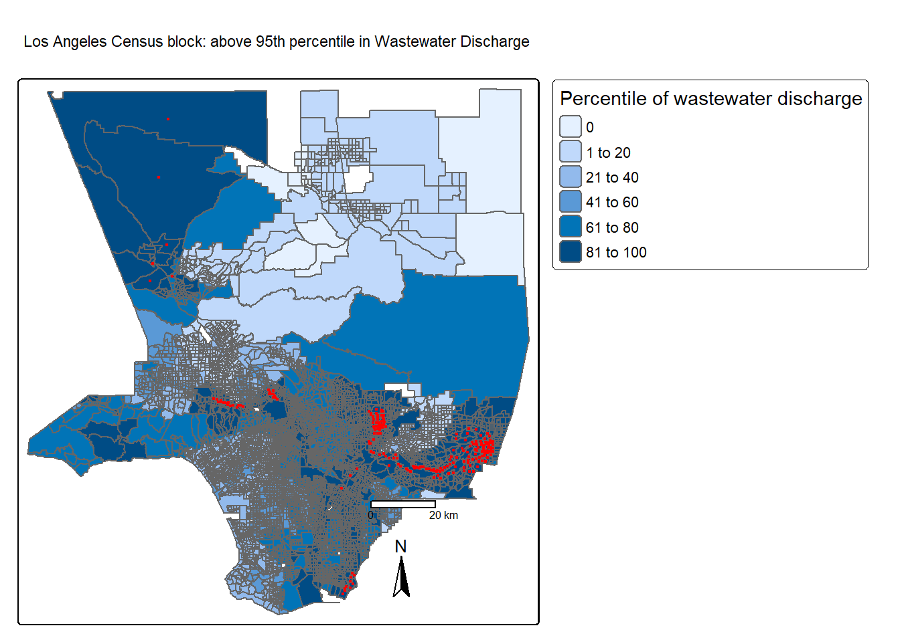

library(sf)
library(terra)
library(dplyr)
library(spData)
library(spDataLarge)
library(tmap)
library(tmap) # for static and interactive maps
library(leaflet) # for interactive maps
library(ggplot2) # tidyverse data visualization package
library(here)Redline analysis in LA
Historical Redline Analysis in Los Angeles County By Census Tract
Overview
In the 1930s, the Home Owners’ Loan Corporation (HOLC), a New Deal initiative, assessed neighborhoods for real estate investment safety. The HOLC’s grading system (A for green, B for blue, C for yellow, and D for red) was then used to deny loans for home ownership, a discriminatory practice known as “redlining.” This historical injustice has affected community wealth and health. Redlined areas exhibit lower greenery levels and higher temperatures compared to other neighborhoods.
I want to examine how this is still a current-day issue by outlining the socioeconomics of current tracts. A recent study found that redlining has not only affected the environments communities are exposed to, it has also shaped our observations of biodiversity.Ellis-Soto and co-authors found that redlined neighborhoods remain the most undersampled areas across 195 US cities. This gap is highly concerning, because conservation decisions are made based on these data[4].
Check out coverage by EOS.
Data
EJScreen
We will be working with data from the United States Environmental Protection Agency’s EJScreen: Environmental Justice Screening and Mapping Tool. EJScreen provides on environmental and demographic information for the US at the Census tract and block group levels.
Mapping Inequality
I will be working with maps of HOLC grade designations for Los Angeles. Information on the data can be found here.1
Biodiversity observations
The Global Biodiversity Information Facility is the largest aggregator of biodiversity observations in the world. Observations typically include a location and date that a species was observed.
We will be working observations of birds from 2021 onward.
Assignment
Investigate the legacy of redlining in current environmental (in)justice
Load relevant packages.
I will first Read in EJScreen data and filter to Los Angeles County
#reading ejscreen here
ejscreen <- st_read("C:/Users/rosem//Documents/MEDS/Courses/EDS-223/assignment-2-rosemaryjuarez/data/EJSCREEN_2023_BG_StatePct_with_AS_CNMI_GU_VI.gdb")Reading layer `EJSCREEN_StatePctiles_with_AS_CNMI_GU_VI' from data source
`C:\Users\rosem\Documents\MEDS\Courses\EDS-223\assignment-2-rosemaryjuarez\data\EJSCREEN_2023_BG_StatePct_with_AS_CNMI_GU_VI.gdb'
using driver `OpenFileGDB'
Simple feature collection with 243021 features and 223 fields
Geometry type: MULTIPOLYGON
Dimension: XY
Bounding box: xmin: -19951910 ymin: -1617130 xmax: 16259830 ymax: 11554350
Projected CRS: WGS 84 / Pseudo-MercatorI will then need to do some data wrangling, by filtering to only the county and census block groups that I am interested with. I am interested in viewing the 95th percentile of national valies for wastewater discharge by adding a centroid.
#filtering to los angeles only
los_angeles <- filter(ejscreen, CNTY_NAME == "Los Angeles County" )
#got to filter first:
water_95 <- filter(los_angeles, P_PWDIS >95) %>%
st_centroid()
#fixing to make it zoom in closer without islands
los_angeles <- los_angeles %>%
filter(P_PWDIS != 'na')
tm_shape(los_angeles) +
tm_polygons(fill = 'P_PWDIS',
title = 'Percentile of wastewater discharge') +
tm_shape(water_95) +
tm_dots('P_PWDIS',
fill = 'red') +
tm_scale_bar() +
tm_compass() +
tm_title('Los Angeles Census block: above 95th percentile in Wastewater Discharge')
#yay first map down!I willnot filter and look for census block groups that have less than 5% of the population considered low-income, find the 80th percentile for particulate matter 2.5, and those above 80th percentile for superfund proximity. We are looking at several groups as we are interested in comparing those in affluent and poor areas
#first setting low_income
low_income <- los_angeles %>%
filter(LOWINCPCT < .05)
#calculating the percentage of census block groups
(nrow(low_income)/nrow(los_angeles)) * 100[1] 5.895795#found 80th percentile and above in the same line
pm2_5 <- los_angeles %>%
filter((P_PM25 > 80) & (P_PNPL > 80))Now that I have filtered for factors I am interested in, I will now begin to investigate redlining by downloading the geojson of the redlining in Los Angeles.
LA_redlining <- st_read("https://dsl.richmond.edu/panorama/redlining/static/citiesData/CALosAngeles1939/geojson.json") %>%
st_make_valid()Reading layer `geojson' from data source
`https://dsl.richmond.edu/panorama/redlining/static/citiesData/CALosAngeles1939/geojson.json'
using driver `GeoJSON'
Simple feature collection with 417 features and 14 fields
Geometry type: MULTIPOLYGON
Dimension: XY
Bounding box: xmin: -118.6104 ymin: 33.70563 xmax: -117.7028 ymax: 34.30388
Geodetic CRS: WGS 84Now i will show a map of historical redlining boundaries, colored by HOLC grade. A reminder that the HOLC grading system are 4 bins: A for green, B for blue, C for yellow, and D for red
#first need to read in data and see what it looks like
tm_shape(LA_redlining) +
tm_polygons(fill = 'fill') +
tm_compass() +
tm_scale_bar() +
tm_graticules() +
tm_title('HOLC Grade in Los Angeles')I now what to find the number of census block groups that fall within areas with HOLC. Finally I want to summarize all the current conditions from the EJSCREEN data. I will find the mean for those in low income, low life expectancy, and air toxics cancer risk
#change CRS
LA_redlining <- st_transform(LA_redlining, "EPSG:3857")
#find census block groups using join
holc_census <- st_join(x = los_angeles, y = LA_redlining)
#crs change again
holc_census <- st_transform(holc_census,"EPSG:3857" )
holc_summary <- holc_census %>%
group_by(fill) %>%
summarise(lowinc_mean = mean(LOWINCPCT, na.rm = TRUE) * 100,
pm_25_mean = mean(P_PM25, na.rm = TRUE),
life_exp_mean = mean(P_LIFEEXPPCT, na.rm = TRUE),
cancer_mean = mean(P_CANCER, na.rm = TRUE)
)
holc_summaryFrom the evidence above, Class D consistently has the worst ratings throughout the table. It not only has the lowest average on Socio-Economic Status, but it also suffers from higher risk of cancer or lower life expectancy. Meanwhile class A has consistent top marks in health and wealth.
Investigating the legacy of redlining in biodiversity observations
For bird observations from 2022 that fall within neighborhoods with HOLC grads, I find the percent of observations within each redlining categories and plot results.
#read in bird data:
birds <- st_read("C:/Users/rosem/Documents/MEDS/Courses/EDS-223/assignment-2-rosemaryjuarez/data/gbif-birds-LA/gbif-birds-LA.shp")Reading layer `gbif-birds-LA' from data source
`C:\Users\rosem\Documents\MEDS\Courses\EDS-223\assignment-2-rosemaryjuarez\data\gbif-birds-LA\gbif-birds-LA.shp'
using driver `ESRI Shapefile'
Simple feature collection with 1288865 features and 1 field
Geometry type: POINT
Dimension: XY
Bounding box: xmin: -118.6099 ymin: 33.70563 xmax: -117.7028 ymax: 34.30385
Geodetic CRS: WGS 84birds <- birds %>%
filter(year == 2022)Right now i am redefining the crs for birds, and joining both birds and holc census data. Finally, now I can finally filter and analyze the summary between birds and HOLC grade. I would assume the more afluent neighborhoods would have higher biodiversity.
#change CRS
birds <- st_transform(birds, "EPSG:3857")
# bird_holc <- st_join(x = holc_census, y = birds)
#summary_birds_holc <- bird_holc %>%
#group_by(grade) %>%
#summarize(count = n()) %>%
# mutate(percentage = (count/sum(count)) *100) %>%
#st_drop_geometry() %>%
# na.omit()#ggplot(data = summary_birds_holc, aes(x = grade, y = percentage))+
# geom_bar(stat = 'identity', fill = 'green', col = 'darkgreen')+
#theme_minimal()+
#labs(x = 'HOLC Grade', y = 'Percentage of Birds Found', title = 'Bird Observations within HOLC Grades')Conclusion
I think these are somewhat surprising, as i did not expect to see HOLC Grade a to be lower than b or C. As Mentioned previously, I would assume those in more affluent neighborhoods would have more biodiversity. To show that B has more biodiversity must mean that there are some factors that O did not consider
Footnotes
Robert K. Nelson, LaDale Winling, Richard Marciano, Nathan Connolly, et al., “Mapping Inequality,” American Panorama, ed. Robert K. Nelson and Edward L. Ayers, accessed October 17, 2023, https://dsl.richmond.edu/panorama/redlining/↩︎